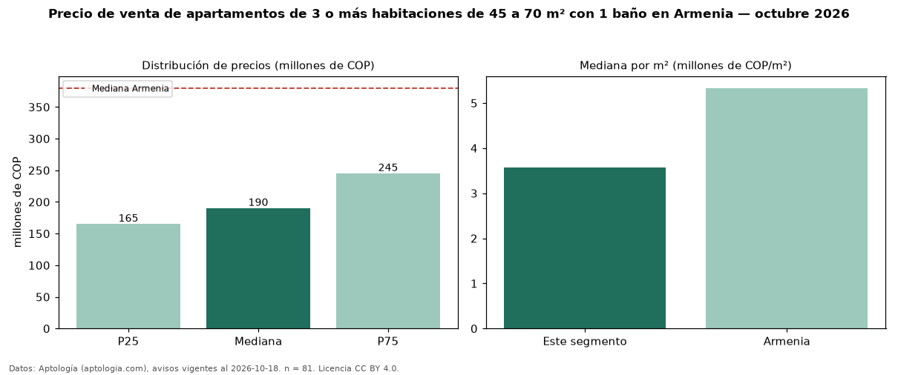

Precio de venta de apartamentos de 3 o más habitaciones de 45 a 70 m² con 1 baño en Armenia — octubre 2026
En Armenia, la mediana de precio de venta de apartamentos de 3 o más habitaciones de 45 a 70 m² con 1 baño es COP 190 millones, según 81 avisos vigentes. Eso es 22 % menos que la mediana de los apartamentos de 3 o más habitaciones de 45 a 70 m² en venta de Armenia (COP 245 millones, n = 461); este segmento reúne el 18 % de esos avisos. Por metro cuadrado, la mediana es COP 3,58 millones/m² (n = 76), 14 % por debajo de los apartamentos de 3 o más habitaciones de 45 a 70 m² en venta de Armenia (COP 4,17 millones/m²). El área mediana anunciada es 55 m². La administración mediana declarada es COP 150.903 al mes (n = 53). El estrato más frecuente es 3 (54 % de los avisos con estrato). La mediana de todos los apartamentos en venta de Armenia es COP 380 millones (−50 % de diferencia). 48 % de los avisos con el dato declara parqueadero. Datos: Aptología (aptologia.com), CC BY 4.0 — https://www.aptologia.com/venta/armenia. Archivos: PDF, CSV con las cifras y gráfica PNG.

| Avisos únicos | 81 |
|---|---|
| Percentil 25 | COP 165.000.000 |
| Mediana | COP 190.000.000 |
| Percentil 75 | COP 245.000.000 |
| Mediana por m² | COP 3.577.777 |
Fuente: avisos vigentes de portales inmobiliarios recopilados por Aptología, deduplicados (mínimo 30 avisos únicos por celda). Precios pedidos, no cerrados. Fecha: 2026-10-18.